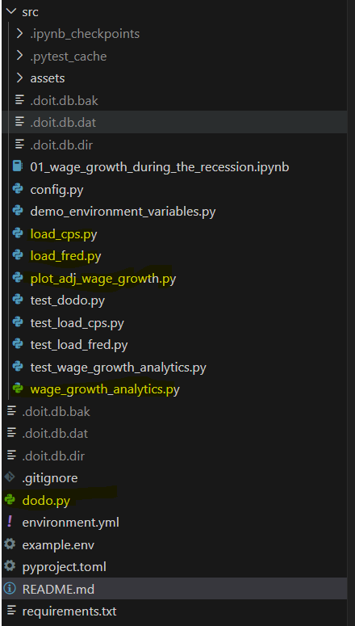

Homework 1#
Learning Outcomes#
Do in class: Introduction to GitHub and GitHub Education
Make sure students get added to GitHub Education. Start with Example HW
Make sure students know how to clone HW repository
Learn basic usage of PyTest to test HW solutions
Learn how to submit HW via GitHub Education
Do on own: Explore the IPUMS CPS data.
Assignment#
Part 0 (ungraded)#
Make sure to “watch” the course repository so that you will be notified of new posts on the course discussion board. Click the “watch” button on the top right of the page.
Consider, if you’d like, posting an introduction here on the course discussion board: orgs/finm-32900#2
Part 1 (ungraded, but required)#
In order to start mastering the many features of Github, please complete the following tutorials from the GitHub Skills page. Please make sure to use public repositories for this in your own GitHub user account. You will provide a link later to demonstrate that it was completed.
-
This will give you some ideas on how to more effectively communicate on the course discussion board.
-
Later in this course, we will use GitHub Pages to host a website. The textbook for this course is hosted on GitHub Pages.
These tutorials are not graded, but please make sure to complete them before the next class.
Part 2 (graded)#
Next, a coding assignment is located at the following GitHub Education link: https://classroom.github.com/a/uDoKANYN Click on the link and accept the assignment.
In this second part, you’ll complete an exercise related to the Atlanta Fed Wage Growth Tracker case study. We’ll download Census data from the Current Population Survey (CPS) via IPUMS and generate a time series similar to the one publish on the Atlanta Fed’s website.
The following is a guide that will help you complete the homework: HW Guide: Wage Growth During the Recession
Additional Notes about the HW#
Hi all. I wanted to add some further clarifications in case there is some confusion.
Which files should I edit?#
In order to complete the homework, you need to adjust the source files so that the unit test files pass. The unit tests are implemented in the files that start with test_FILENAME.py. The files indicated by the red bracket below are the test files.
NOTE: You should not make any edits to these files. If an edit is made, you will be required to edit the history of your commits to remove any trace of the edits to these files:

So, to complete the assignment, you should edit the source files that are being tested. That is, you should make edits to the files highlighted in yellow below:

Finally, there is a notebook available in the file src\01_wage_growth_during_the_recession.ipynb. You do not need to do anything with this file. It exists only to provide guidance on how to complete the various steps needed to produce a new, demographically adjusted wage series as we discussed in class.
Why are we doing it this way?#
The point of structuring the assignment this way is to give you experience with unit testing, CI/CD, and the concept of test-driven development. These are concepts that you should learn to level-up your software development skills. These are real-world development concepts and getting experience with them should move you beyond the over-simplified approach that you might find in a typical university problem set.
We discussed unit tests and test-driven development in class a little. If you’d like more in-depth information, please watch these YouTube videos:
“Software Testing Explained in 100 Seconds” (This short video is written from the perspective of a web developer, but the same concepts apply to us.)
“Test-Driven Development In Python // The Power of Red-Green-Refactor” (This video discussing unit testing with Python and PyTest.)
How can I check if my tests are passing?#
From the command-line, in the base directory of the project, run pytest
In test_dodo.py file, you’ll also notice that one of the tests asks you to edit dodo.py file so that the command doit will run all of the code of the project. To execute the dodo.py file, make sure PyDoit is installed and then simply run doit from the command line in the base directory of the project.
More information about Git and GitHub#
Also, if you’re looking for more instruction about how to use Git, here are two videos that I might recommend: